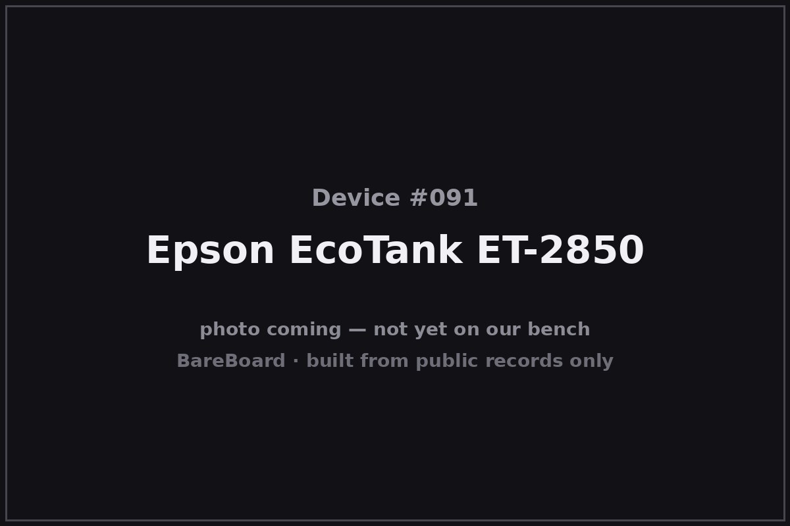

The Autopsy Report · Device #091
Epson EcoTank line: the ET-2850
The EcoTank is the printer that stopped selling ink by the thimble: since 2010, Epson's cartridge-free line has used refillable ink tanks instead of disposable cartridges. The ET-2850 — a wireless all-in-one from 2021 — is our example unit. One important scope note: the FCC filing for this device covers its Wi-Fi module, not the whole printer, and the autopsy respects that boundary.
What is this thing?
The Epson EcoTank ET-2850 is a wireless all-in-one inkjet printer — print, scan, copy — from Epson's EcoTank line. Instead of cartridges it uses four refillable ink tanks (black, cyan, magenta, yellow) that you fill from bottles. Newspower — ET-2850 brochure (PDF) It prints at up to 4800 × 1200 dpi, around 10.5 pages per minute in black, and connects over 802.11 b/g/n Wi-Fi or USB. Laptop Mag
Whose box is this?
This one isn't on our bench — yet. Nothing here comes from a BareBoard teardown: no disassembly, no boot logs, no bench measurements, no firmware in our hands. Everything below is built from public records — the government's FCC filing, the manufacturer's own documents, and contemporary press — read carefully and cited line by line. That's the deal with these reports: when a fact can't be verified from a public record, we say so, out loud.
The moment this hardware crosses our bench, this report gets a second act: our own photos, our own measurements, and anything the public record got wrong gets corrected.
A short history
Epson launched the EcoTank line in 2010, betting that customers would rather buy ink by the bottle than by the cartridge. 9Meters The bet paid off enormously: by 2020 Epson had shipped its 50 millionth ink-tank printer. The Recycler
The ET-2850 is a 2021-era example of the line — a mid-range wireless all-in-one that reviewers note for its low running costs and its unhurried print speeds. Laptop Mag It's the example unit for this report; the line itself spans dozens of models across a decade and a half.
The outside

The ET-2850 is a compact black all-in-one: flatbed scanner on top, paper output at the front, and the four ink tanks visible behind a window on the right side — the EcoTank's signature. The product brochure documents the layout and the tank system in full. Newspower — ET-2850 brochure (PDF)
Reading the plastic
Mold marks, date wheels, material codes — the shell's birth certificate. This is bench-only evidence: without the physical unit in our hands, there's nothing honest to read here. What the enclosure looks like is described above from public photos; what's molded into it awaits the bench.
The board
Here's the scope boundary, stated plainly: the FCC filing for this printer — FCC ID BKMFBJ26H006 — covers the J26H006 WLAN module, not the printer as a whole. fccid.io filing The internal-construction photos in the filing are module-level only: the Wi-Fi radio board, its shielding, and its antenna — not the main logic board, not the print engine.
So this section describes what the filing actually authorizes: a self-contained 802.11 b/g/n module that Epson integrates into the ET-2850 (and sibling models). The printer's main board is outside the public record we've reached and awaits the bench.
Under the microscope: the chips
Unknown at the printer level. The WLAN module's own silicon isn't legibly documented in the public records we've reached, and the printer's main-board chips — the print engine controller, the scanner pipeline — are entirely outside the FCC filing's scope. Naming any of them would be invention. A donor ET-2850 on the bench would open both the module and the main board.
The government's file on this box
The FCC equipment authorization is FCC ID BKMFBJ26H006, grantee Seiko Epson Corporation, covering the J26H006 WLAN module used in the ET-2850. fccid.io filing Read the filing for what it is — a radio module authorization — and don't mistake it for a teardown of the printer.
Listening in
We have no boot log for this device — no unit on the bench means nothing to listen to. But the posture is worth stating up front, because it governs everything BareBoard ever does with a live device.
We listen, we don't knock. A serial console is a place to watch a device narrate its own startup, not a place to log in, change things, or break past anything the manufacturer locked. On our bench we attach read-only: power and ground, one receive wire, and silence on the transmit line. We never use JTAG or SWD debug headers to take control, never extract or modify firmware, never hunt for credentials, and never publish anything that would let someone else bypass a lock or defeat authentication.
When this device arrives, the first question will be: where does it talk, and does it talk to us unprompted? Until then, that question stays open.
What we found
- The EcoTank line launched in 2010; Epson shipped its 50 millionth ink-tank printer in 2020.
- The ET-2850 is a 2021-era wireless all-in-one example: refillable tanks, 4800 × 1200 dpi, Wi-Fi b/g/n.
- The FCC filing covers only the J26H006 WLAN module — the printer's main board is undocumented in public records.
What we didn't do
- We never opened a unit, attached to a debug port, or powered one up for this report.
- We never extracted, modified, or shared any firmware or software.
- We never published or used any credentials, keys, or bypass techniques.
- No boot logs, no bench measurements, and no photos of our own — because there is no unit of ours to photograph. The device photo above is credited in its caption.
By the numbers
- Line launch: 2010
- Milestone: 50 millionth ink-tank printer shipped (2020)
- Example unit: ET-2850 (2021-era)
- Print: Up to 4800 × 1200 dpi; ~10.5 ppm black
- Connectivity: 802.11 b/g/n Wi-Fi, USB
- FCC ID: BKMFBJ26H006 (J26H006 WLAN module)
- Bench status: Not yet on our bench
Words to know
- EcoTank
- Epson's cartridge-free printer line: refillable ink tanks filled from bottles instead of disposable cartridges.
- WLAN module
- A self-contained Wi-Fi radio board; the only part of this printer the FCC filing covers.
- All-in-one
- A printer that also scans and copies.
Sources & confidence
- ET-2850 product brochure (specs, tank system) — Newspower/Epson (PDF) link — Confirmed
- Epson EcoTank ET-2850 overview — 9Meters link — Likely
- Epson ships 50 millionth ink tank printer — The Recycler, Oct 2020 link — Confirmed
- Epson EcoTank ET-2850 review — Laptop Mag link — Likely
- FCC filing BKMFBJ26H006 (grantee: Seiko Epson Corporation; J26H006 WLAN module) — fccid.io link — Confirmed
- Printer main-board hardware (chips, layout) — outside the filing's scope; no verified public record — Unknown
Legal note. BareBoard is an educational project. Everything on this page is derived from public records — our own bench work begins only when hardware arrives. We don't publish, host, or distribute firmware, keys, passwords, or credentials, and nothing here bypasses a lock, defeats authentication, or extracts software from a device. Product names and trademarks belong to their respective owners and appear here only to identify the hardware. If you believe anything here infringes your rights, contact us and we'll address it promptly.